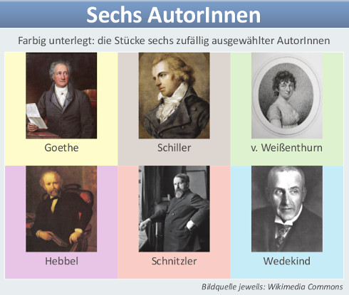
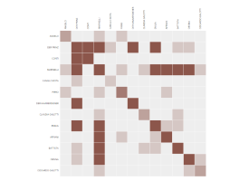
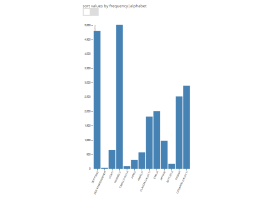
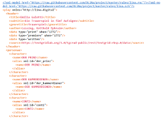
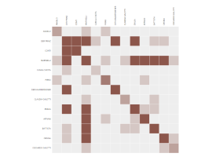
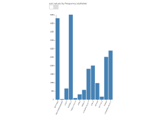
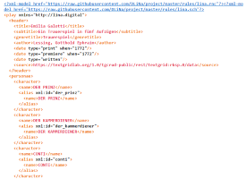
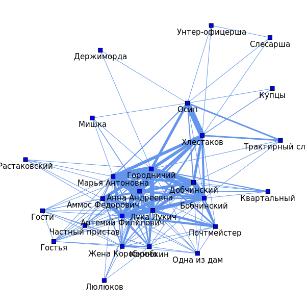
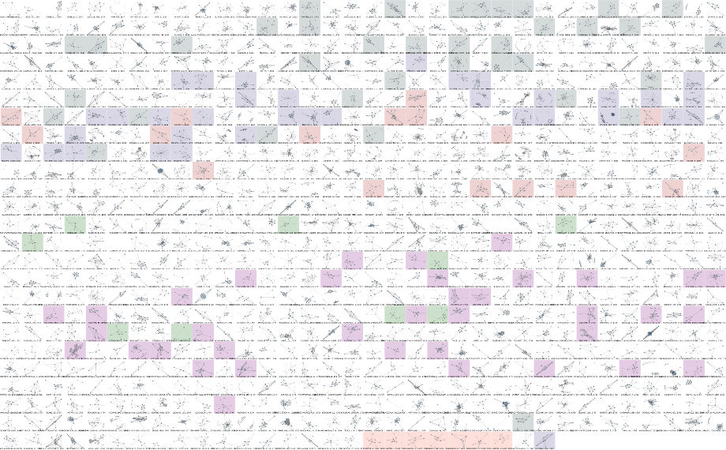

Анализ социальных сетей в драматических текстах
Франк Фишер · Даниил Скоринкин
Школа лингвистики
Национальный исследовательский университет Высшая школа экономики · Москва
- E-mails: ffischer@hse.ru, daskorinkin@edu.hse.ru
- Github: lehkost, danilsko
- Twitter: @umblaetterer, n/a
- Блог (Network Analysis of Dramatic Texts): lina.digital
Московско-тартуская летняя школа · 5 июля, 2016
План презентации
- Что
- Зачем
- Как
1. Что
Анализ социальных сетей …
"… представляет собой исследование социальных сетей, рассматривающее социальные отношения в терминах теории сетей." (ru.wikipedia.org)
Теория сетей …
"… изучает графы связей между дискретными объектами." (en.wikipedia.org, наш перевод)
Пример небольшой сети из
8 вершин (узлов) и 10 ребер:
.png)
(Источник: Wikimedia Commons)
{kind=link}
Сеть литературного влияния (Английская Википедия)

Писатель A связан с писателем B, если статья о писателе А содержит ссылку на статью B. Размер узла и подписи пропорциональны важности узла, расчитанную по алгоритму PageRank.
История анализа соицальных сетей
- Анализ социальных сетей возник в 1930-е как подход в социальных науках
- 'Гарвардский прорыв' 1960-х: социологи, математики и программисты разрабатывают структурно-аналитический подход к социальным феноменам
- В 1990-е развитие Интернета, а также новые достижения физики и биоинформатики открывают новые перспективы для анализа социальных сетей; в 2000-е анализом социальных сетей занялись литературоведы
- См. P. Trilcke: Social Network Analysis (SNA) als Methode einer textempirischen Literaturwissenschaft. В: P. Ajouri, K. Mellmann, C. Rauen (ред.): Empirie in der Literaturwissenschaft. Münster, 2013, стр. 201–247.
Анализ социальной сети "Гамлета" (Ф. Моретти, 2011)

(Источник: newleftreview.org)
Дальнее чтение (1/2)
"Если же мы хотим выйти за пределы канона […], то пристальное чтение нам не подходит. Оно не создано для таких задач, оно создано для решения задач противоположных. […] мы умеем читать тексты, теперь нужно научиться не читать их. Дальнее чтение, для которого расстояние […] является условием получения знаний […]."
Франко Моретти: Гипотезы о мировой литературе (2000; пер. с англ. Олега Собчука). B: Ф. М.: Дальнее чтение. Москва, 2016, стр. 83.
Дальнее чтение (2/2)
Арно Шмидт (1914–1979) об ограничениях обычного чтения:
"Жизнь так коротка! Даже если вы книжный червь и за 5 дней можете прочитать книгу дважды, вы едва ли прочитаете больше 70 в год. За 45 лет чтения (с 15 до 60 лет) это даст вам всего 3150 книг, и их нужно выбирать с умом!"
Arno Schmidt: Ich bin erst sechzig (1955). В: Bargfelder Ausgabe, Werkgruppe I, Vol. 4. Zürich, 1987, стр. 30. (Наш перевод.)
"Визуализируя трагедии Шекспира"

Мартен Гранжан, Визуализация соцсетей (6 из 11) в трагедиях Шекспира (Декабрь 2015). Полная версия постера с комментариями доступна на сайте автора. Информация извлечена вручную (см. интревью автора на PBS.org, Апрель 22, 2016), такой подход не позволяет осуществлять "удаленное" чтение.
Пример "удаленного" чтения

Ф. Фишер, М. Гёбель, Д. Кампкаспар, Х. Киттель, Х.-Л. Майнерс, П. Трильке, А. Фогель, Соцсети героев 465 пьес в одной картинке. Постер был представлен на DHd2016. DOI: 10.6084/m9.figshare.3101203.v1.
Фрагмент постера #1

Посмотрим на пьесу Гёте "Гёц фон Берлихинген" (1773).
Фрагмент постера #2

Посмотрим на пьесу Артура Шницлера "Хоровод" (1902).
Фрагмент постера #3
Часть авторов размечена цветами для отображения
хронологической последовательности.
Пример "удаленного" чтения (Déjà-vu)
Ф. Фишер, М. Гёбель, Д. Кампкаспар, Х. Киттель, Х.-Л. Майнерс, П. Трильке, А. Фогель, Соцсети героев 465 пьес в одной картинке. Постер был представлен на DHd2016. DOI: 10.6084/m9.figshare.3101203.v1.
2. Зачем
Визуализация и анализ (1/4)
Пример: "Эмилия Галотти" Лессинга (1772)
 





Визуализация и анализ (2/4)
Интермедия: Главные болтуны немецкой литературы

См. соответствующую запись в блоге DLINA.
Визуализация и анализ (3/4)
Размер сети (средний) по десятилетиям (1730–1930):

См. запись "200 Years of Literary Network Data" в блоге DLINA.
Визуализация и анализ (4/4)
Плотность сети (средняя) для разных жанров (три века):

См. запись "Comedy vs. Tragedy: Network Values by Genre" в блоге DLINA.
3. Как
dramavis (Киттель/Фишер 2014–2016)
- Python 3, библиотека NetworkX для анализа сетей
- Принимает на вход XML (специальный промежуточный формат DLINA, есть конвертер для перевода TEI в формат DLINA)
- Выдает "суперпостер" (см. слайды выше) в SVG и соцсети в других форматах
- Производит подсчет статистики на графе, конвертирует входной XML в CSV (для загрузки в Gephi или Cytoscape)
- Исходный код: github.com/lehkost/dramavis
От цифр к смыслу
"Основная методологическая проблема digital humanities предельно ясна: как перейти от цифр к смыслу? Исследуемые объекты, получаемые данные, методы анализа — все они количественные. Не ясно, как перейти от этих объектов и данных к качественным выводам о литературе, искусстве, явлениях культуры."
Ryan Heuser / Long Le-Khac: A Quantitative Literary History of 2,958 Nineteenth-Century British Novels: The Semantic Cohort Method. (= Pamphlets of the Stanford Literary Lab, N° 4.) May, 2012, стр. 46. (Наш перевод.)
Недавно опубликованное:
- Peer Trilcke / Frank Fischer: Distant Reading With Foucault? Thoughts on the Practice of Distant Reading and on the Operationalisation of Discourse Analysis. In: Foucault-Blog, 26 April 2016. DOI: 10.13095/uzh.fsw.fb.141.
- Выжимка на английском: weltliteratur.net/Distant-Reading-with-Foucault/
15 канонических текстов для мастер-класса
- Фонвизин, "Недоросль" (1782)
- Грибоедов, "Горе от ума" (1825)
- Пушкин, "Борис Годунов" (1825)
- Гоголь, "Ревизор" (1836)
- Гоголь, "Женитьба" (1842)
- Островский, "Свои люди – сочтемся" (1850)
- Островский, "Гроза" (1859)
- Алексей Толстой, "Смерть Иоанна Грозного" (1866)
- Сухово-Кобылин, "Дело" (или: "Смерть Тарелкина") (1869)
- Островский, "Бесприданница" (1879)
- Лев Толстой, "Власть тьмы" (1887)
- Чехов, "Чайка" (1896)
- Чехов, "Дядя Ваня" (1897)
- Лев Толстой, "Живой труп" (1900)
- Чехов, "Вишневый сад" (1904)
Формализация взаимодействия героев
Source,Target,Weight
Барыня,Варвара,2
Барыня,Кабанов,1
Барыня,Кабанова,1
Барыня,Катерина,2
Борис,Варвара,4
Борис,Глаша,1
Борис,Дикой,1
Борис,Женщина,1
Борис,Кабанов,1
Борис,Кабанова,1
Борис,Катерина,3
Борис,Кудряш,4
Борис,Кулигин,3
Борис,Первый,1
Борис,Феклуша,1
...
"Гроза" Островского, контакты между героями в виде CSV (comma-separated values) таблицы.
Островский, "Гроза"

Легко выделить центральную часть сети.
Пушкин, "Борис Годунов"

Обратите внимание на Гаврилу Пушкина.
Гоголь, "Ревизор"
Обратите внимание на Осипа.
"Théâtre classique", 842 французские пьесы
842 соцсети героев; 250 лет французской драматургии в одной картинке (извлечено из TEI документов проекта "Théâtre Classique", см. GitHub). Цветом выделены: Пьер Корнель, Мольер, Расин, Кребийон, Вольтер, Еврипид (обратная нумерация дат до н.э.). Результат воскресного "хакатона" (@goebel_m + @chris_kittel + @umblaetterer).
"Вот, собственно, и все."
Спасибо!
Увидимся на мастер-классе!
Франк Фишер · Даниил Скоринкин
- E-mails: ffischer@hse.ru, daskorinkin@edu.hse.ru
- Github: lehkost, danilsko
- Twitter: @umblaetterer, n/a
- Блог (Network Analysis of Dramatic Texts): lina.digital